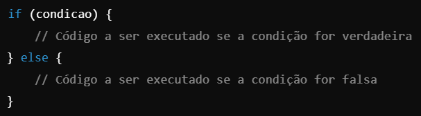

Nessa aula vamos aprender a usar o if, else e else if para fazer verificações em nossos códigos.
O uso de if, else e else if no JavaScript é essencial para tomar decisões no código com base em condições.
Eles permitem executar blocos de código diferentes dependendo se uma condição é verdadeira ou falsa.
Estrutura Básica do if :
O if é usado para executar um bloco de código apenas se uma condição for verdadeira (true).
Adicionando o else :
O else é usado para executar outro bloco de código se a condição for falsa (false)

Usando o else if :
O else if é usado para verificar múltiplas condições. Ele é avaliado somente se as condições anteriores forem falsas.
Exemplo Simples
VAMOS VER SE O NUMERO É UNIDADE, DEZENA, CENTENA OU MILHAR
CODIGO DO EXEMPLO
Como Funciona?
Primeiro, verifica o if:
Se a condição for verdadeira, executa o bloco de código e ignora o restante.
Se o if for falso, verifica o else if:
Avalia a próxima condição. Se verdadeira, executa o bloco correspondente e ignora o restante.
Se nenhum dos if ou else if for verdadeiro, executa o else:
Serve como um "caminho padrão".
Dicas para Uso:
1️⃣ Use o if para verificar condições simples.
2️⃣ Use o else if para lidar com múltiplos casos.
3️⃣ Use o else para capturar qualquer situação não prevista.